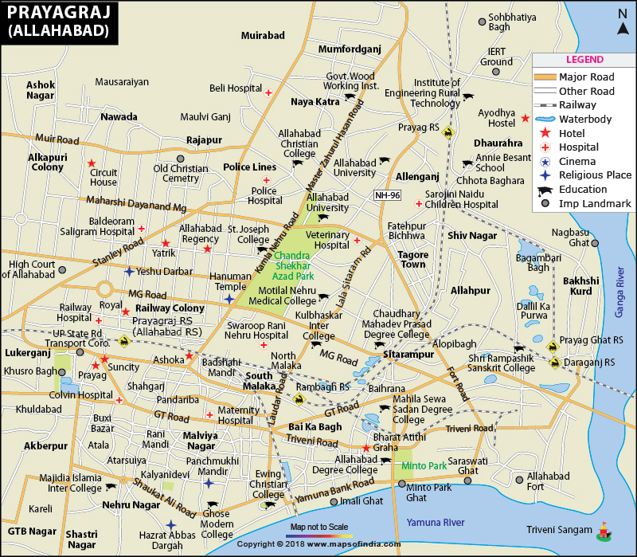

About the city
Situated at the elevation of 322ft from the sea level, the beautiful land surrounding the confluence of
the two most revered rivers of Northern India has been called many names in the past,and has seen
equally frequent times of glory and prosperity, bulk of which can still be seen in the spirit of the
city and its inhabitants. Home to one of the most important religious and cultural centre of North
Indian history, the city established by Akbar the Great is a treasure trove for the history
buffs!!!
The city, with its classical charm, boasts a wealth of heritage from recent and medieval
times, with a modern city at its heart just vying for your attention. Fashionable cafes, humongous
shopping centres and impressive restaraunts have propped up and taken residence in the Civil Lines, the
de facto urban centre of the city.
While in the area, be sure to relive the Independence movement
with the memorabilia of the Gandhi-Nehru family, look at the bullet-holes from the legendary encounter
of Chandrashekar Azad in the Alfred Park, or simply get lost in the wonders of the world of star and
planets in the Jawahar Planetorium. If you know what you enjoy, you are never going to run out of the
things to do in Allahabad.
Places to visit
Various places from various eras of Indian Histories having varying areas of importance to people are preserved in the city and offer a pleasant and insightful experience to pilgrims and heritage lovers from all over the world.
A lot of this is reflected during the Kumbh Mela, the biggest conglomeration of pilgrims in the world, when the city looks, tastes and feels the best. This, along with the annual Magh Mela is the apt time for anyone looking for a soulful escape to visit Prayag and dip their body in the holy waters of the Triveni Sangam, a practice that's said to rid one of all their innate evils.
Allahabad University
The fourth oldest university in India, it was established on 23rd of September, 1887 by the British government. It's remarkable structure has influences from the Egyptian, English and Indian styles of architecture.
Allahabad Fort
Built by Emperor Akbar in 1583, this massive fort was unrivalled in its design and craftsmanship in its time. It is situtated close to the site of Triveni Sangam and enhouses the Ashoka pillar and the Akshayvat tree
Minto Park
Situated near the Saraswati ghat, Minto Park has a stone memorial with a four-lion symbol on top. This park was where the East India Company formally transferred its control over India to the British government.
Khusro Bagh
This garden is home to four important tombs of the Mughal dynasty. One of them belongs to Khusrau Mirza, the eldest son of Jahangir. The tombs have been beautifully carved with intricate details in them.
All Saints' Cathedral
This church was designed in a Gothic style of architecture by Sir William Emerson in the late 19th century. It is known as the "Patthar Girja" to the locals and stands remarkably inside a roundabout in the Civil Lines.
Anand Bhawan
This historic house belongs to the Nehru family, and is now open to the public as a museum for the Independence movement led by the INC. The whole complex contains the Swaraj Bhawan and the Jawahar Planetorium.
As cultural icons of the city, there are many temples and pilgrimage sites scattered thorughout the city, which hold a special place in the hearts of the city-dwellers,as is evident from the number of folklores associated with them. These are some of the more interesting places to visit in the city -
ISKCON mandir
This temple is one and the final one of the series of ISKCON Krishna temples built on the banks of the river Yamuna, someone who is frequently associated with the deity. It has an exceptionally pleasant and charming atmosphere and is always worth a visit just to spend your evening.

Shree Akhileshwar Mahadev
This massive temple was established by the Chaitanya Foundation in 2004 and was built from pink sandsttones delivered from Rajasthan in Rasulabad. It has a spacious hall which is often used for social gatherings and hosting feasts.
Bhardwaj Ashram
This place is believed to be the abode of sage Bhardwaj, a disciple of sage Valmiki, whose blessings were sought by Lord Ram. The present building here contains 100s of statues of gods and goddesses, some believed to have a history of over a thousand years.
Life & Cuisine of Prayagraj
The presence of a sense of co-existence between the historical monuments and modern attractions and conviniences in the place has impacted the city's culture to a large scale, something which is very evident in the taste buds of the city. The main cuisine of Allahabad is Awadhi, and has various iconic shops that serve it it's fill. The Eat-on chain, and their spicy biryanis are famous in the whole Purvanchal region. The pan-Indian recipes of Netram and Kamadhenu in the Civil Lines have made their name even in the National Capital. And who can overlook the thousands of street stalls which serve instant Chaat throughout, even exploring the various styles of Chaat in Prayagraj is an adventure. The variety of food here reflects the impact the city has had as a hub for various North Indian Cultures.
Some of the must-have delicacies of Prayagraj are listed below-
- Chaat
- Dahi Bhalla
- Chhole Samose
- Chicken Biryani
- Masala Churmura
How to reach Prayagraj
Prayagraj, owing to its geographical importance, is a well-connected city by air, land or water. Particularly land, where it acts as the main link between the Western and Eastern parts of the country.
Prayagraj railway station is the a major railroad hub of Northern Railways. A Civil Airport was recently constructed which allows for quicker and easier travels from major cities of India. The sub-tropical climate means the city is open to visitors all year round.